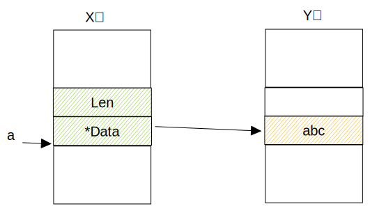

1 如何设计字符串
首先我们知道在编译型语言中一个变量所占的内存必须是确定的
从上面的代码我们做一些思考
- 字符串变量指向的实际字符的内存内容是可变的
- 如何知道字符串的长度
- 实际存放字符的地方, 遇 “\0” 截止?
- 或设计上直接写明字符的字节长度
- 实际字符串所在内存是否可以直接修改内容
- 这个基于实际字符串放在内存的什么区域?
- 字符串增长时(比如拼接)是怎么处理的
str:="abc"实际字符串所在位置是就分配3个字节- 增长时, 就需要重新分配内存,需要copy原先的字符串到新位置的操作
- 如果你有很多次拼接,那么需要考虑性能, 用一些好的方式来拼接
2 数据结构
3 字符串的定义
Tip
func TestString(t *testing.T) {
cd := 1
println(&cd)
a := "abc我们"
b := (*reflect.StringHeader)(unsafe.Pointer(&a))
// 字节大小16, 字符长度是9, 1个汉字占3个字节
println(unsafe.Sizeof(a), b.Len, b.Data)
println(&a, &b.Len, &b.Data)
fmt.Printf("0x%x\n", b.Data)
c := (*[3]int8)(unsafe.Pointer(b.Data))
// 97 98 99
println(c[0], c[1], c[2])
// c[0] = 'd' // 无法修改的,实际字符在内存的只读区
a2 := "abc我们"
b2 := (*reflect.StringHeader)(unsafe.Pointer(&a2))
// 我们发现, 实际字符串 和上面的变量a 的字符串 存放的位置是一样的
// 字符串字面量在常量区会重复使用, 因为是只读的,所以可以这样
println(b2.Data) // = b.Data
}var global_init_strxyz string = "hello"
func TestString2(t *testing.T) {
b := (*reflect.StringHeader)(unsafe.Pointer(&global_init_strxyz))
// 0x1209c70 0x1209c78 0x1209c70
println(&global_init_strxyz, &b.Len, &b.Data)
fmt.Printf("0x%x\n", b.Data) //0x11293bd
c := (*[3]int8)(unsafe.Pointer(b.Data))
// 104 101 108
println(c[0], c[1], c[2])
// c[0] = 'd' // 无法修改的,实际字符在内存的只读区
}//go:linkname inheap runtime.inheap
func inheap(arg uintptr) bool
func TestString4(t *testing.T) {
arr := [5]byte{'h', 'e', 'l', 'l', 'o'}
slc := arr[:]
fmt.Println(slc) // arr 逃逸到 堆中了
println(inheap(uintptr(unsafe.Pointer(&arr))))
// 直接将切片转为 字符串
b := *(*string)(unsafe.Pointer(&slc))
fmt.Println(b) // hello
slc[0] = 'w'
fmt.Println(b) // wello
}//go:linkname inheap runtime.inheap
func inheap(arg uintptr) bool
func getString() *string {
r := "hello"
b := (*reflect.StringHeader)(unsafe.Pointer(&r))
println(b.Data) // 0x1129A7D 常量区
println(&b.Len, &b.Data) //0xc00005e6a0 堆区
return &r
}
func TestString5(t *testing.T) {
s := getString()
println(s)
println(inheap(uintptr(unsafe.Pointer(s))))
}package main
import (
"reflect"
"unsafe"
)
func A(ptrArr *[5]byte) {
s := "world"
sStruct := (*reflect.StringHeader)(unsafe.Pointer(&s))
b := uintptr(unsafe.Pointer(ptrArr))
sStruct.Data = b
println(s)
ptrArr[0] = 'f'
println(s)
}
func main() {
arr := [5]byte{'h', 'e', 'l', 'l', 'o'}
x := 2
println(&arr, &x)
A(&arr)
}汇编代码, 只列出一点,其他自行查看
main
TEXT main.main(SB)
func main() {
0x105c906 4883ec30 SUBQ $0x30, SP
0x105c90a 48896c2428 MOVQ BP, 0x28(SP)
0x105c90f 488d6c2428 LEAQ 0x28(SP), BP
arr := [5]byte{'h', 'e', 'l', 'l', 'o'}
0x105c914 c744240b68656c6c MOVL $0x6c6c6568, 0xb(SP)
0x105c91c c644240f6f MOVB $0x6f, 0xf(SP)
x := 2
0x105c921 48c744241002000000 MOVQ $0x2, 0x10(SP)4 字符串与字符切片的转换
前面代码验证字符串数据结构,知道 a := "abc我们" 这样定义的字符串是无法修改指向的内存的内容
查看汇编可以看到使用的是runtime.slicebytetostring()
func slicebytetostring(buf *tmpBuf, ptr *byte, n int) string {
// ...
var p unsafe.Pointer
if buf != nil && n <= len(buf) {
p = unsafe.Pointer(buf)
} else {
p = mallocgc(uintptr(n), nil, false)
}
// 会复制切片的内容
memmove(p, unsafe.Pointer(ptr), uintptr(n))
return unsafe.String((*byte)(p), n)
}字符切片转字符串-方式二
- 切片的内存结构
- 字符串的内存结构
我们知道类型转换就是换一种方式来读写内存,根据切片和字符串的内存结构,发现他们刚好可以很方便的进行转换,切片data指向的字符数组成了字符串data的指向,这个转换是高效率的.
稍微看下汇编
0x006b 00107 (main.go:15) MOVQ AX, main.a+48(SP) # 字符数组地址
0x0070 00112 (main.go:15) MOVQ $3, main.a+56(SP) # 切片长度 设置=3
0x0079 00121 (main.go:15) MOVQ $3, main.a+64(SP) # 切片cap 设置=3
0x0082 00130 (main.go:16) LEAQ main.a+48(SP), AX
0x0087 00135 (main.go:16) TESTB AL, (AX)
0x0089 00137 (main.go:16) MOVQ main.a+48(SP), AX
0x008e 00142 (main.go:16) MOVQ AX, main.b+32(SP) # 字符数组地址
0x0093 00147 (main.go:16) MOVQ $3, main.b+40(SP) # 字符串的len 设置=35 字符串拼接
思考
前面在如何设计字符串中提到的如果多次拼接考虑性能,在字符串与字符切片的转换中提到的转换方法,我们不难想到一个高效拼接字符串的思路
5.1 strings.Builder(推荐)
Tip
推荐 事先看具体情况 Grow 一下
func TestString6(t *testing.T) {
var builder strings.Builder
builder.WriteString("hello")
res := builder.String()
fmt.Println(res)
}strings.Builder源码相关
type Builder struct {
addr *Builder
// 存放字符的切片, var builder strings.Builder 这个时候 切片的 cap ,len ,data 都是0
// WriteString 时,才会分配, 容量由 切片自己看情况扩容
// 基于这一点, 应该有 事先?就进行 字符切片容量分配的操作 ==> Grow
buf []byte
}
func (b *Builder) WriteString(s string) (int, error) {
b.copyCheck()
b.buf = append(b.buf, s...)
return len(s), nil
}
func (b *Builder) Grow(n int) {
b.copyCheck()
if n < 0 {
panic("strings.Builder.Grow: negative count")
}
if cap(b.buf)-len(b.buf) < n {
b.grow(n)
}
}
func (b *Builder) grow(n int) {
buf := make([]byte, len(b.buf), 2*cap(b.buf)+n)
copy(buf, b.buf)
b.buf = buf
}
func (b *Builder) String() string {
return unsafe.String(unsafe.SliceData(b.buf), len(b.buf))
}5.2 strings.Join
Tip
底层原理是用的strings.builder
6 其他操作
7 字符集
Caution
有时间再详细写写
Caution
中英文混合的情况, 计算机是如何知道用一个字节或三个字节来区分是什么字符的呢? 是如何断字的?
UTF-8的编码规则 go语言默认的编码方式
- 1个字节的字符: 0xxxxxxx, 0开头表示一个字节的
- 2个字节的字符: 110xxxxx 10xxxxxx
- 110 开头表示2个字节的
- 10开头表示一个字符的中间字节
- 3个字节的字符: 1110xxxx 10xxxxxx 10xxxxxx
- 4个字节的字符: 11110xxx 10xxxxxx 10xxxxxx 10xxxxxx
func TestString(t *testing.T) {
a := "我"
// 0xE6 1110 0110
// 0x88 10 001000
// 0x91 10 010001
fmt.Println(a[0], a[1], a[2])
}
结果
我们将上面 “我” 汉字的每个字节的 “前缀” 去掉得到
0110 001000 010001 ==> 01100010 00010001 => 0x6211
我的unicode 码就是 0x6211